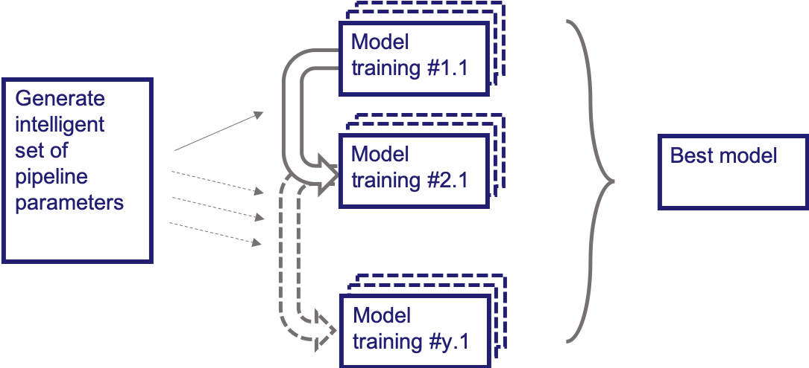
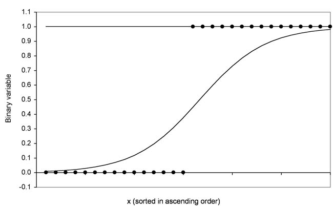

Text Classification of Indonesian Translated Hadith Using XGBoost as the Model and Chi-Square as the Feature Selection

Given the data containing the value of housing in the suburbs of Boston, on the problem in this dataset, we will create a model that can perform an automatic hyperparameter tuning process with a nature-inspired algorithm by using Support Vector Regression, XGBoost, and Multi-Layer Perceptron prediction methods.
Visualization of a dataset consists of historical data on COVID-19 cases in Indonesia from March 2 - 31, 2020. The available historical data includes the accumulative number of sample tests, confirmed positive, confirmed negative, and other data.
There is data about readers' reviews and feelings towards a Kindle book. They also give a rating to the book. Then what I do is classify the data based on the rating they give using Naive Baye and Random Forest classifiers, and predict it with new reviews.

Performing credit scoring with bank data who want to create an automatic creditworthiness assessment system based on the data they have. Performed credit analysis and predicted the flag credit based on existing variables.
Prepare and analyze data from a fashion site and make a visualization with a tableau dashboard.

Classifying customer data at vehicle dealerships using logistic regression models without using libraries when modeling (from scratch).

Given customer data that are then grouped based on the data at the vehicle dealer and whether customers are interested in buying new vehicles or not. I solve this problem by using the K-Means clustering algorithm.

This project is an assignment during my college days and is in the form of a report. This report was created to fulfill the need for a hospital database that can
develop software that will help them in carrying out the business process of hospitalization.
Visualization with dashboards on google data studio visualization tools.